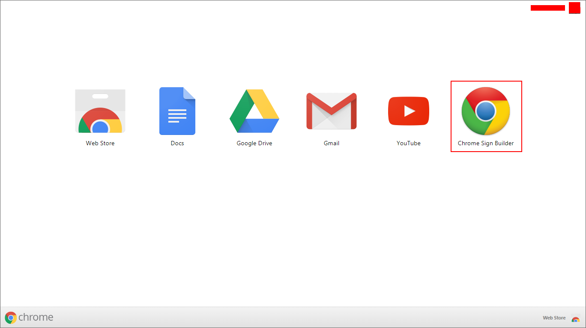
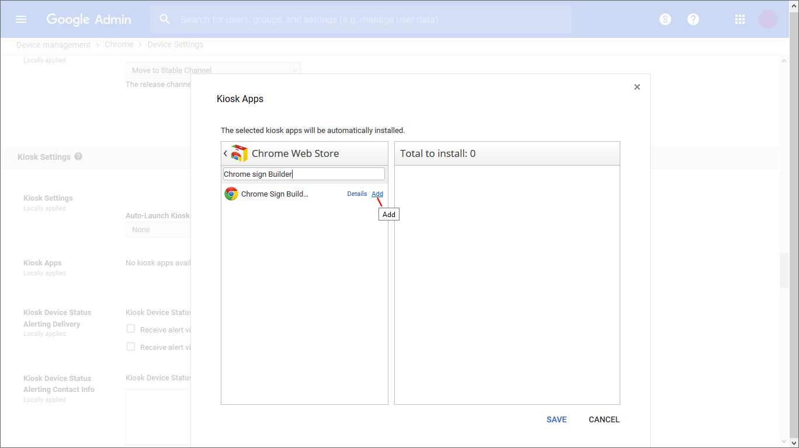
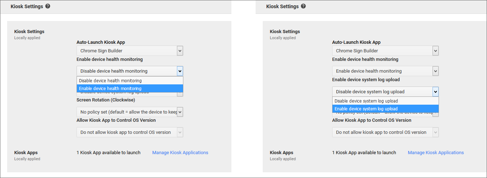
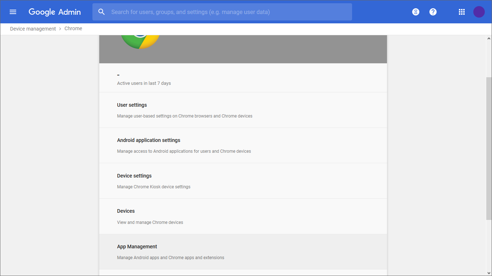

Implementing Digital Signage using Chrome Ecosystem
 |
IntroThis is a step by step Guide on implementing Digital Signage using the Chrome Ecosystem, this guide is viable for implementing one device or numerous devices. On this guide we will make reference to the Chromebox as our device of choice but this guide can also be used to implement digital signage using other Chrome OS devices such as Chromebit, Chromebase etc. Created on: October 25th, 2018 Email: pwainainak@gmail.com You can also find the latest update of this guide on; |
About
Chromeboxes are secure, easy to manage and cost effective, making them ideal to display content and engage customers, clients or any other type of audience in any location.
Chrome Sign Builder is a digital signage utility that lets you schedule and display content cross your managed Chrome devices. With Chrome Sign Builder, you can use Chrome devices (such as Chromeboxes) as media players for digital signs.
Chrome Sign Builder gives you a preview of the content that will be shown on the digital signs. While you can download and install Chrome Sign Builder on one of the same Chrome devices where it will be deployed, the deployment process is simpler if you install it on another computer.
What you need to get started
|
Chrome kiosk apps can run as kiosk-only applications where no user account is required. Kiosk apps give full control over the user's experience to the application itself, for example, allowing someone to use a virtual keyboard or setting up URL whitelists or blacklists. HardwareFor hardware, you need a Chrome device and a display.
For this guide, we will use an Asus Chromebox.
|
Software
For software, you need a Google Device Management Account, a Chrome license(s) and a Chrome kiosk app.
For this guide, we will use a free 30 day trial; Google Device Management Account which we will create in our next step, hence we will not need a Chrome license(s).
- Chrome license (one per Chromebox). To purchase Chrome licenses, contact the Chrome or Google for Education team. You can also purchase Chrome Enterprise licenses online.
- Chrome kiosk app. You can use a Chrome kiosk app you have created or a Chrome kiosk app from the Chrome Web Store.
For this guide, we will use the Chrome Sign Builder as our kiosk app, which is readily available in the Chrome Web Store.
Google Device Management
With a Google Device Management Account you can manage Chrome devices and policies on devices that run Chrome as an operating system. These devices include Chromebooks used as work computers. They also include Chromeboxes or Chromebits used for digital signage or single-purpose kiosk apps.
From a cloud-based Admin console, enforce policies, install apps and extensions, connect devices to your VPN and Wi-Fi networks, and manage other features of Chrome.
Sign Up
For this guide we intend to manage a Chromebox remotely for the purpose of Digital Signage.
Once you click on Sign Up, a Sign-up page will open on a new tab similar to the image below.
Fill in all the required fields then click ACCEPT AND CREATE YOUR ACCOUNT
- Do not forget to check the checkbox at the bottom of the form or the ACCEPT AND CREATE YOUR ACCOUNT button will be inactive.

Once you click ACCEPT AND CREATE YOUR ACCOUNT you will receive an email containing a link to verify the email you used to sign up.
On clicking the link provided in the email, it will verify your email and take you to another page for you to create a password for your new account.

Enter your desired password, repeat it then click CREATE YOUR ACCOUNT and you will be taken to a thank you page.
On the Thank you page, click TAKE ME TO THE DEVICE MANAGEMENT CONSOLE, You will then be redirected to a login page for you to log into the admin console of your new account.
Sign In
On the Thank you page, click TAKE ME TO THE DEVICE MANAGEMENT CONSOLE, You will then be redirected to a login page for you to log into the admin console of your new account.
Sign in with your new Google Device Management account email address (as seen in the above image) and the password you created above.
Admin Console
Once you complete your Sign in process, you will be redirected to the Admin Console similar to the image below.

- You have completed your first major milestone and now you are ready to start enrolling devices in our next step.
Device Enrollment
Each device will require user credentials even if it will be working as a display only kiosk with no user interaction.
So, before we even enroll a device we will be required to create user credentials for that particular device.
Creating User(s)
|
To create a new user, scroll to the Users icon on the Admin console. On clicking the icon you will be taken to the users management page, there you can create new users, rename users, delete users and much more. To create a new user hover your mouse cursor on the yellow circle + icon, at the top left side of the page. On hovering your cursor, two options will appear; Add new user and Bulk upload users Click Add new user and a pop up window will appear for you to create a new user. Fill in all required fields then click ADD NEW USER. |
- Below is an image showing the new user form.
- Remember to note down your new user credentials, you will require them in our next device enrollment process.
Chromebox Enrollment
To enforce the device policies you set in your Google Admin console, you need to enroll devices running Chrome OS. If you're a Chrome Enterprise or Chrome Education customer, you can let users enroll them. Each enrolled device complies with the policies you set until you wipe or deprovision it.
- You must enroll devices before anyone signs in to them. If you don't, you need to wipe the device and restart enrollment.
So, assuming you have a Chromebox that a user has already signed into, follow the steps on Wiping your Chromebox below, to wipe your Chromebox and make it ready for enrollment. If no user has signed into the Chromebox skip that stage and go to the next stage on Manually enroll your Chromebox to begin the enrollment process.
Wiping your Chromebox
You can clear all local user data stored on a Chrome device by switching to developer mode and then switching back to normal mode. This is useful if you want to re-enroll a Chrome device after a user signs into it.
To manage a Chrome device in your domain, you must enroll it before any user signs in to it (including you as the administrator). If a user signs in before you enroll the device, your Admin Console account policies and preferences will not apply, and you must wipe the device to restart enrollment and manage the device in your domain.
- All account information and data stored on a Chrome device that isn't synced with Google Chrome Sync, such as photos, downloaded files, and saved networks, is deleted during the wipe process.
To return a Chromebox to its original (factory) state, follow these steps:
Step 1: Turn off the Chromebox.
Step 2: Put a paperclip (or pushpin) into the recovery button hole. The image below shows where to find the recovery button hole in your Chromebox.
Step 3: Press down the recovery button with a paperclip while turning on the device.
Step 4: Press Ctrl + D.
Step 5: Press the recovery button with the paperclip again. The device reboots and displays a red exclamation point.
Step 6: Press Ctrl + D. The Chromebox reboots and starts the transition to developer mode. This clears all local data and takes approximately 10 minutes.
- If Forced re-enrollment is enabled for the device, you'll see a note that developer mode is blocked. This shortens the wipe process, and still allows for re-enrollment when the device automatically reboots into verified mode.
Step 7: At the startup screen, press the spacebar, and then press Enter to reboot the device and return to verified mode.
Once you have completed all the steps above, your Chromebox is in its original (factory) state and ready for enrollment.
Manually enroll your Chromebox
Step 1: Turn on the Chrome device and follow the on-screen instructions until you see the sign-in screen. Don't sign in yet. If you see the enrollment screen instead of the sign-in screen, go to Step 3.
Step 2: Choose an option to get to the enrollment screen.
- Press Ctrl+Alt+E.
Step 3:Enter the username and password of the user you created earlier from the Admin Console or for a Google Account that has eligibility to enroll.
Step 4:When you get a confirmation message that the device is successfully enrolled, click Done.
Once you have completed all the steps above, your Chromebox has successfully enrolled to the domain. You can see a list of enrolled devices in your Admin console.
Next is to install Chrome Sign Builder, outlined in our next stage.
Chrome Sign Builder Extension
Chrome Sign Builder is a digital signage utility that allows you to schedule and display content across your managed Chrome device network.
Chrome Sign Builder makes it easy to show web content such as restaurant menus, conference lineup and agenda, images, and YouTube videos and playlists-as well as Google Presentations, which can be edited by anyone who has access to the presentation.
You configure Chrome Sign Builder once. In initial setup, you create schedules and specify the URLs for content that will be displayed according to the schedules. Later you might need to change the content at those URLs, but you don't have to reconfigure schedules and settings in Chrome Sign Builder.
- You will need to have a Chrome Browser installed in your Computer to install Chrome Sign Builder Extension.
Installing Chrome Sign Builder Extension
Open your Chrome Browser, then click on the Apps button at the top left; below the search bar, as seen from the image below.
You will be taken to the Chrome Apps page. From the Chrome Apps page, click Web Store. From the chrome web store search 'Chrome Sign Builder'
Alternatively, search 'Chrome Sign Builder' from the URL bar. It should appear among the top results on Google search and the link will redirect you to the Chrome web store page containing the extension. Below is a screen shot of the web store page of the extension.
From the Extension page click Add to Chrome to install the extension.
Once the extension has successfully installed, it will be available on your Chrome Apps page whenever you want to launch it.

From the Chrome Apps page, you can now launch the Chrome Sign Builder for us to start creating signs.
Once you launch it, two pages will pop-up; one with an interface to allow you to create and configure your signs the other showing what current sign is displaying.
Since we have not created any sign, the display pop-up screen will show No content scheduled, as seen in the image below.
Creating signs using the Chrome Sign Builder Extension
Now that we have installed the Chrome sign builder, we can go ahead and create a sign that we wish to display on the signage.
You can now minimize the display pop-up and remain with the configuration pop-up that we are going to use to create the sign schedule.
What we want to create is schedules for our signage, what is to be displayed during what time intervals.
By default there will be two New Schedule schedules already created. They are blank however, so you can choose to customize them or create a new one.
For this guide I choose to customize one of them instead of creating a new one to avoid clustering our configuration dashboard.
To start, click one of the New Schedule, then from the timeline section Click & Drag from the time you want the sign to be showing to when it should end.
For this guide I clicked 6am and dragged to 6pm, for our sign to show from 6am to 6pm.
Once you finish dragging between your time intervals, a pop-up will appear for you to configure your newly created schedule, as seen below.
The initial pop-up will only show two fields, URL and Zone but once you click Advanced... more options will appear as shown above.
I have numbered the fields so that I can be able to explain how each field affects the schedule you are creating.
1. URL: In this field, you will place the link to the content you want to display. This can be a link to a web page, image, video, google drive document or presentation etc. Basically anything that is available to get to publicly on the internet via a link.
2. Zone: This represent the section of the screen you want your content to display. There are several options but for this guide we are going to choose Fullscreen so that our content displays on the whole screen.
3. Content duration: This represents the duration of time the content is going to show in a day. It is going to be filled automatically since we selected it by clicking and dragging through the timeline. We clicked and drag from 6am to 6pm which is 12hours and equal to 720 minutes since our field is in minutes.
4. Automatic reload url every: If the URL you placed above contains content that could be changing in the course of the day, you will want to activate automatic reload of the content to effect the changes. Once you activate automatic reload by checking the box adjacent, a time field will show up for you to enter time intervals for the content to reload. For this guide we choose every 30 minutes which is equal to 1800 seconds since the field is in seconds.
5. Begin Date: This is the date the schedule will begin displaying. It is going to be filled automatically since we selected it by clicking and dragging through the timeline.
6. Begin Time: This is the time of the day the schedule will begin to display. It is going to be filled automatically since we selected it by clicking and dragging through the timeline.
7. Repeat: This represents how often you want the schedule to repeat. There are several options but for this guide we will choose Daily so that the schedule can repeat every single day at the selected time, in this case 6am to 6pm every single day of the week.
8. Repeat indefinitely: Once you choose daily, this option will appear with the checkbox checked to indicate the schedule will display daily forever. If you want the schedule to display until a certain date and not forever, uncheck the checkbox and a date and time field will appear for you to specify when you want the repetition to stop. For this guide we will go will Repeat indefinitely hence you can leave the checkbox checked.
Once you are done, click Save.
Your schedule will populate on every day of the week during the time you selected as seen below.
Before we go on we would like to change the name of the schedule we just edited to avoid confusion.
To do that, move your mouse cursor to the name of the schedule you would like to rename.
On doing that, a drop down button will appear at the right side of the name.
Click the drop down and two options will appear Edit settings and Delete schedule as seen in the image above.
Select Edit settings and a pop-up will appear as seen in the image below.

From the pop-up, (as seen above) you can change;
- Name of the schedule, we have changed it to Daily Meetings assuming we just created a schedule to be displaying meetings happening around the campus of our organisation.
- Screen orientation There are several options but I suggest you leave it as it is System default.
- Default URL Here you can place a link to content you wish to display when there is nothing scheduled. That way the Chrome Sign is never empty. You can put a link to your logo, website etc. Basically anything you want. We scheduled our content to display from 6am to 6pm meaning from 6pm to 6am there will be nothing scheduled on our signs and that's when content from the Display URL will display.
Once you are done, click Save. Now you have finished creating you sign schedule and ready to export the schedule, which we will later upload in our admin console.
To export the schedule, click the Green Export Button at the bottom left of the configuration page and save it in your desired location that you will be able to retrieve in our next step.
Chrome Sign Builder Kiosk App
Now that we have our Chrome device enrolled, Chrome sign builder installed and sign schedule build. We are going to install the Chrome sign builder kiosk app that we are going to use to display our sign. To start we are going to go back to the Admin console so that we can remotely install the app into our Chromebox.
From the Admin console click on the Device Management icon to begin. (As seen on the image below)
Once you click on the device management icon, you will be redirected to a page containing all enrolled devices on your domain. (As seen in the image below)

Depending on how many devices you have enrolled, they will all show up here categorised by type.
Here we will click Chrome Devices so that we can be able to view all chrome devices which includes our Chromebox.
On clicking, we will be taken to a page to view our Chrome devices categorised by organisation for further configuration. (As seen in the image below)
You can also create new organisations in case you have several Chrome devices which you want to push different configuration or content.
For this guide we will use the default organisation, assuming we want to push the same content on all our devices, hence we will not need to make any changes on this page.
We will then go back to the device management page so that we can now install our kiosk app.
From the device management page click Chrome management. (As seen in the image below)

Once you click Chrome management you will be taken to Chrome management page. There will be several options as seen in the image. Scroll down to Device settings as we are currently interested in remotely configuring the device settings of our Chromebox.
Once you click Device settings you will be taken to Device settings page. There will be several options, Scroll down to Kiosk Settings as we are currently interested in remotely configuring the kiosk settings of our Chromebox.
You will note as indicated in the section that there are no kiosk apps installed, hence our first task will be to install the Chrome sign builder kiosk app.
To install the kiosk app, click Manage Kiosk Applications (as seen in the image below).
Once you click Manage Kiosk Applications a pop-up will appear that contains a search bar where you can search the particular app you wish to add from the chrome web store.
For this guide, we will search 'Chrome sign builder' since that's the app we would like to add.
Once it appears click the Add link adjacent (As shown in the image below).
Once you are done click SAVE.

On clicking SAVE the pop-up will close and you will realize from the Kiosk settings, it will indicate 1 Kiosk App available to launch. (As shown in the image below)

Our next step will be to set the Chrome Sign Builder App to launch on startup of our device.
To do that, click the drop down under Auto-Launch Kiosk App and select Chrome Sign Builder. (As seen in the image below)
Once you choose an Auto-Launch Kiosk App, more options will appear below.
Click the drop-down below Enable device health monitoring and from the options provided select Enable device health monitoring.
Then click on the next drop-down below Enable device system log upload and from the options provided select Enable device system log upload.

Once you Enable device system log upload, a pop-up will appear requesting you to confirm your selection.
Select Yes, I have notified users. then click ENABLE LOG UPLOAD, since we shall be using our Chromebox as a Kiosk and there will be no user interaction.
Once you click ENABLE LOG UPLOAD, the pop-up will close and we will have finished configuring our kiosk settings.
To save all the changes we've made in the kiosk setting click the SAVE button at the bottom right corner of the page. (As seen in the image below)
Uploading Sign Schedule
Once we are done configuring Device Settings, our next step will to configure App Settings and uploading our Sign Schedule.
We will go back to Chrome Management page and from the options provided, scroll down to App Management. (As shown in the image below)

On clicking App Management you will be taken to the App Management page containing all the installed apps.
From the apps page, click Chrome Sign Builder.
On clicking Chrome Sign Builder you will be taken to the Chrome sign builder settings page.
From that page, scroll down and click Kiosk settings.
Once you click Kiosk setting the Kiosk setting option will expand to give more configure options adjacent to the domain.
Turn on Install automatically and Allow app to manage power then scroll down to Configure section, there is where we are going to upload the sign we earlier created and exported.
To upload your sign schedule, click UPLOAD CONFIGURATION FILE then choose the sign schedule we earlier saved. Once you are done Click SAVE.
We have completed our Chrome signage setup and if you check the screen attached to your Chromebox it should be displaying the sign schedule we created from the Chrome Sign Builder Extension.
Support
Please feel free to contact me for any kind of support, query and/or suggestion. I will respond as soon as possible.
You are also welcomed to contribute towards improving this guide through my GitHub Repository.
Thank you,
Email:pwainainak@gmail.com